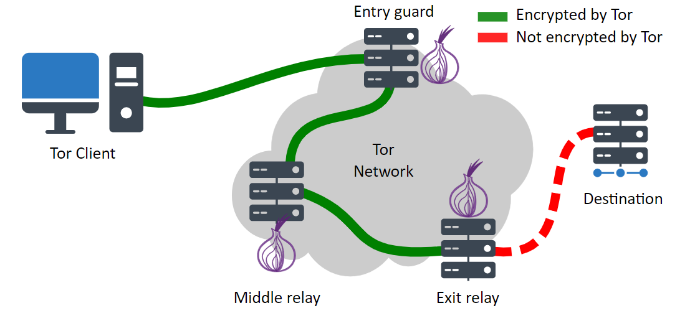

Websites on the Tor network play a crucial role in a world where privacy and freedom of expression face growing challenges, offering, when used correctly, a means of secure browsing and access to uncensored information.
Concept:
Tor (The Onion Router) is free software and an open network that enables anonymous browsing, as it masks users' IP addresses by redirecting traffic through a global network of volunteers (nodes) before reaching the final destination, in addition to using multiple layers of encryption. Furthermore, it allows access to hidden services (.onion), which are websites inaccessible through the conventional internet and are part of the Tor network.
Attention: For security purposes, it is recommended to perform the mentioned actions from an isolated VPS.
For creating websites on the Tor network, the following will be used:
- A web server (Apache);
- Ubuntu operating system (Linux);
- Tor software;
- Tor browser;
- Static content for demonstration.
Installing Tor Browser
First, you need to install the Tor Browser, the browser that enables access to services from the Onion network linked to the Tor Project. At https://www.torproject.org/download/, download the Tor Browser. Then, extract the file for future use:
tar -xvf tor-browser-linux-x86_64-14.0.3.tar.xz
Installing Tor:
Next, you need to install Tor. Therefore, with administrative permissions, use the command below:
sudo apt install tor -y
After installation, verify if the service is active:
systemctl status tor
Configuring the Hidden Service:
The next step would be to configure the Tor software, allowing access to the website. To do this, go to the configuration file and edit it:
sudo vim /etc/tor/torrc
Then, find the following lines and uncomment them:
HiddenServiceDir /var/lib/tor/hidden_service/
HiddenServicePort 80 127.0.0.1:8080
Finally, to apply the changes, restart the Tor service:
sudo systemctl restart tor
After restarting, the onion address for the created site will be in "/var/lib/tor/hidden_service/hostname". Therefore, you can view it using:
cat /var/lib/tor/hidden_service/hostname
Configuring the Web Server:
Lastly, you need to configure the web server. For demonstration purposes, Apache was chosen.
sudo apt install apache2
In /var/www/html, insert the static site
cd /var/www/html
vim index.html
With this, when entering the URL obtained from var/lib/tor/hidden_service/hostname in the Tor browser, the previously inserted static site will load. Thus completing the process of creating a static site on Tor.

Thus, a website was created on the Onion network linked to the Tor Project, enabling customization of the site according to the user's wishes.